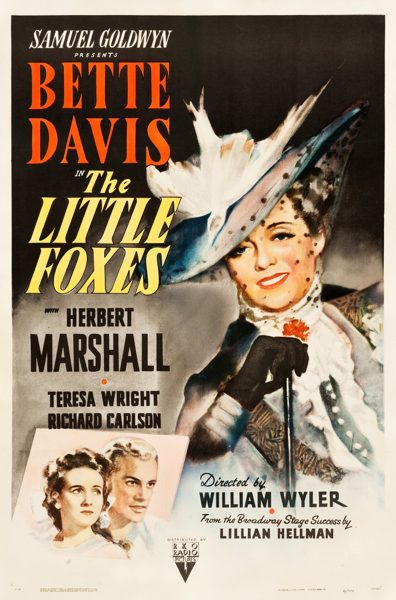

THE STANFORD THEATRE
Now Showing
·
Upcoming
·
Past
·
Search
September 14 - October 7, 2018
Bette Davis
4 bills
September 14 - 16
Of Human Bondage (1934)
83 min
It's Love I'm After (1937)
90 min
September 21 - 23

The Little Foxes (1941)
116 min
Cabin in the Cotton (1932)
79 min
September 28 - 30
In This Our Life (1942)
Satan Met a Lady (1936)
75 min
October 5 - 7
The Man Who Came to Dinner (1942)
The Working Man (1933)
78 min
Archived
•
StanfordTheatre.org Original